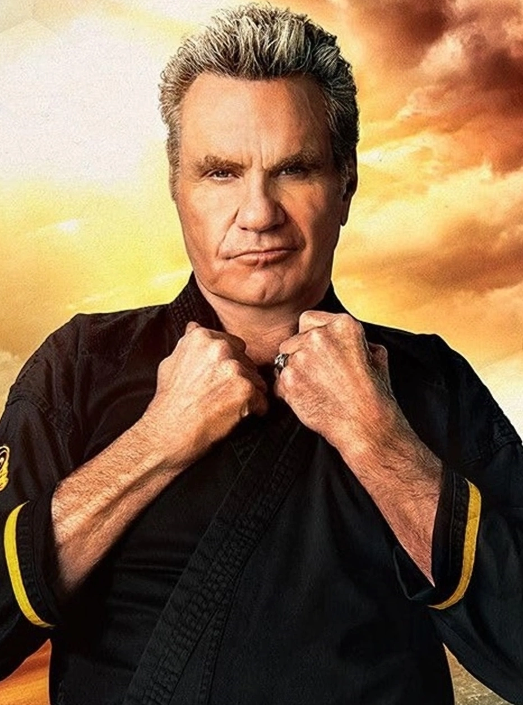

SENSEIS

Martin Kove
John Kreese
John Kreese, conocido como Kreese, es el principal antagonista de la franquicia The Karate Kid. Kreese es un cruel, despiadado y desquiciado veterano de la guerra de Vietnam y sensei del dōjō de karate, Cobra Kai durante la década 1980. Inculcó una peligrosa filosofía de "sin piedad" en sus alumnos y así animó el accionar de generaciones de bravucones. En particular, Kreese le enseñó karate a un Johnny Lawrence adolescente y tuvo un feudo intenso con su rival de karate, el Sr. Miyagi. Después de varias derrotas reiteradas a manos de Daniel LaRusso y el Sr. Miyagi, Kreese se marchó del valle y perdió el contacto con sus alumnos. Más de treinta años después, Johnny Lawrence reabrió Cobra Kai, lo que provocó que Kreese hiciera un regreso sorpresa al valle.

Thomas Ian Griffith
Terry Silver
Terry Silver es el segundo antagonista en importancia en la serie. Veterano de vietnam donde sirvió junto a su amigo Kreese. Allí este último le salvaría la vida dejándo a Silver en deuda permanente con él. En el pasado fue convocado por Kreese para ayudarlo en su vengaza contra Daniel Larusso, relatada en los acontecimientos de la tercera película de la saga. Ahora, 30 años después, vuelve a ser convocado por Kreese para que vuelva al valle y juntos retomar el control de Cobrar Kai y lograr su venganza contra Miyagi-DO.